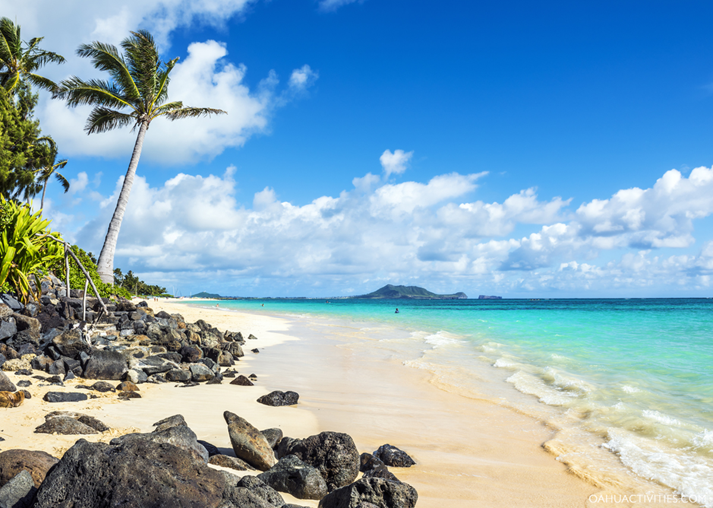
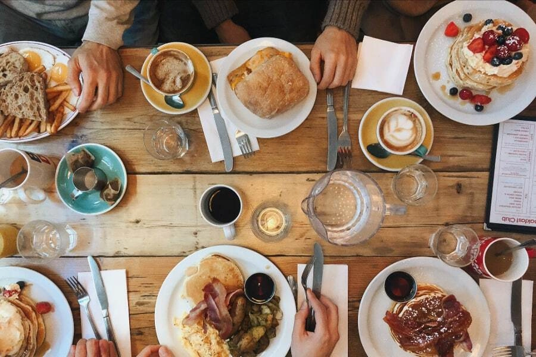
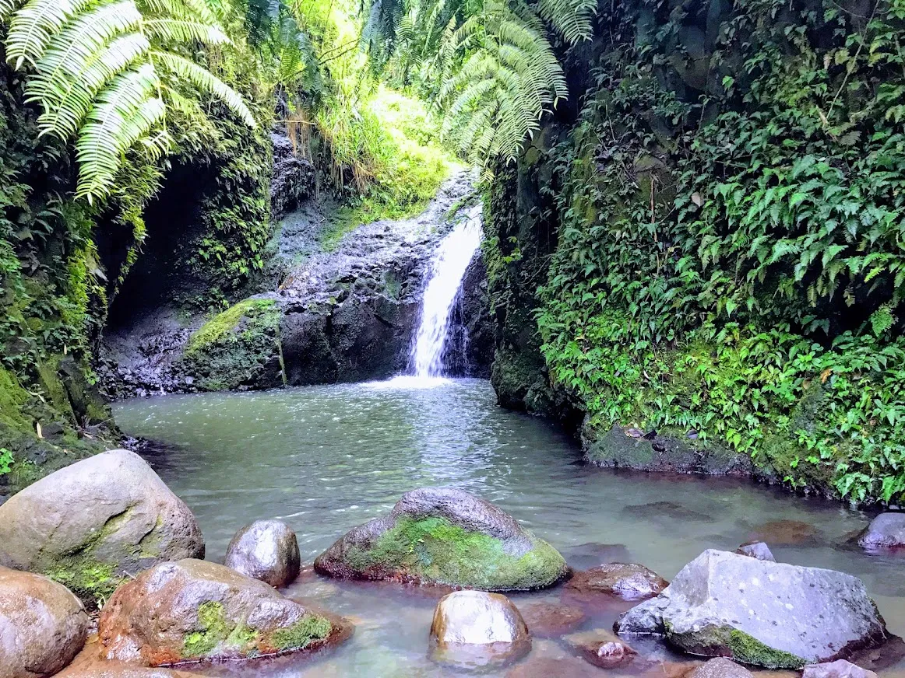
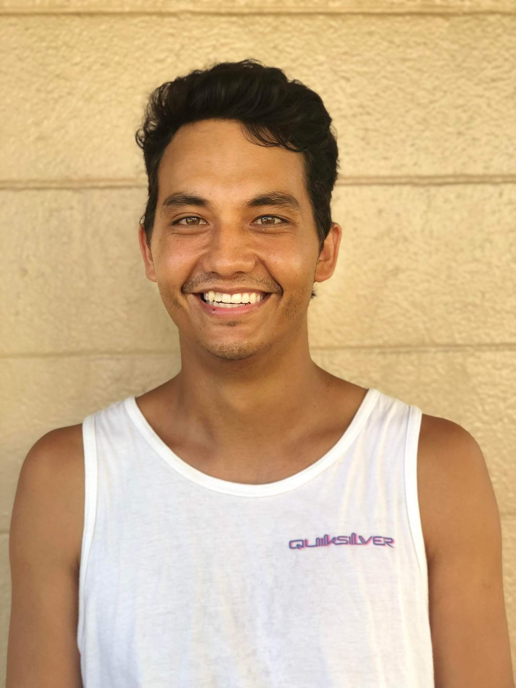

Aloha from Kailua!
Escape the pace of busy downtown Waikiki at this little beach town on the East side of O'ahu.
While in Kailua you must...

Visit Lanikai beach
Kailua is home to the world famous Lanikai beach, widely regarded as the most beautiful beach on O'ahu!

Eat breakfast
Kailua is all about breakfast. Whether you go to Boots and Kimo's, Moke's Cinnamon's or Over Easy, each eatery has its own unique flare.

Swim at Maunawili falls
Opposite the beaches in Kailua lie the mountains, full of trails, hikes, and waterfalls. Kailua's most prominent being Maunawili Falls.

Your Guide
Being born and raised in Kailua, I can show you the best beach spots, best farmer's markets, and best place to get poké bowls.
Trevor Paulelekoa Loo